Case Study · Real Estate · Batdongsan.com.vn
Solve user pain points on search & filter tool
Overview
| Project | Search Renovation |
|---|---|
| Users | Consumer - Buyer, Renter, Investor |
| My role | Product Designer - end-to-end from research to design solution |
| Stakeholders | Head of Product, Product Manager, Researcher, Data Analyst, Engineering Manager, Developer, QA |
| Timeline | May – October 2025 |
| Impact | Search rating 4.3 / 5★ |
Batdongsan.com.vn is the #1 real estate platform in Vietnam. The search feature is a core function, critically impacting the user journey - especially for home seekers looking to find relevant property listings.
In 2024, we built a search experience optimized for multi-location searches. Users who searched with multiple locations at a time showed a higher conversion rate compared to single location searches. That insight led us to invest in revamping the location search function. However, it introduced complex UX behavior that negatively impacted the largest user group.
Let's see this story between Xuan and Mai. Xuan suggested Mai to find land for sale in Dak Lak Province - it's very potential for investment. Back home, Mai tried to search that location on Batdongsan.com.vn, but she struggled at the 1st step: she didn't know how to type the right name "Ea Kar, Đắk Lắk".
So, how do we help Mai search for land for sale in that location? This is just one of several use cases my team and I faced and solved in this project. Let's dive in!
Goals
We want to help users complete their search faster and easier with less effort, and to increase search result accuracy:
- Improve the UX on the search & filter feature, focused on the primary group of users and behaviors on Batdongsan.com.vn
- Apply an autocompleted search engine that can suggest context-aware, semantically relevant search phrases in real-time as users type
Success metrics:
- Experience score: Rating & survey feedback
- Search accuracy: % of search result pages that have clicks to listing detail
Process
Research & Insights
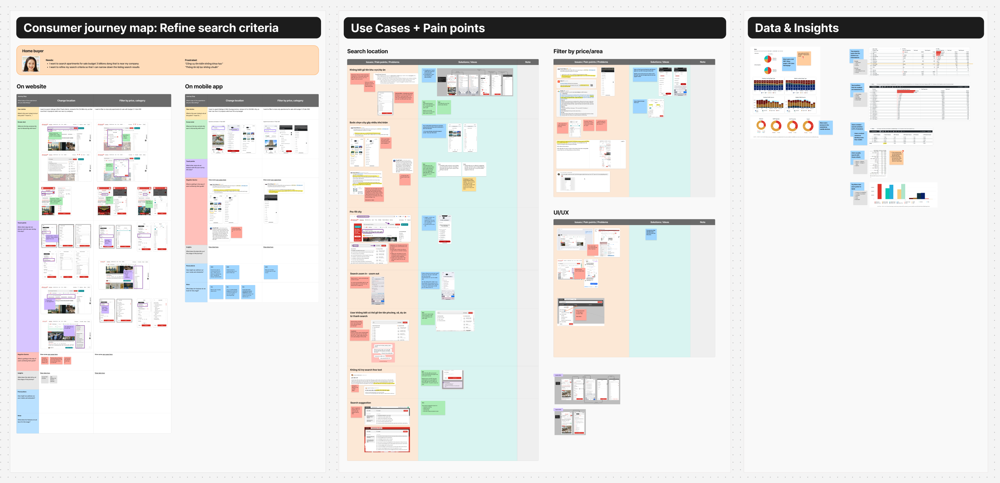
View detail: Figma research board ↗
After collecting feedback from recurring surveys, customer support channels, and user interviews, I found that the search version we built in 2024 was not bad - it fit a specific group of users (after 8 months, Rating = 4.2/5★). But why was this version still receiving a lot of complaints?
Key insight #1
The multi-location tag function was unfamiliar to most users.
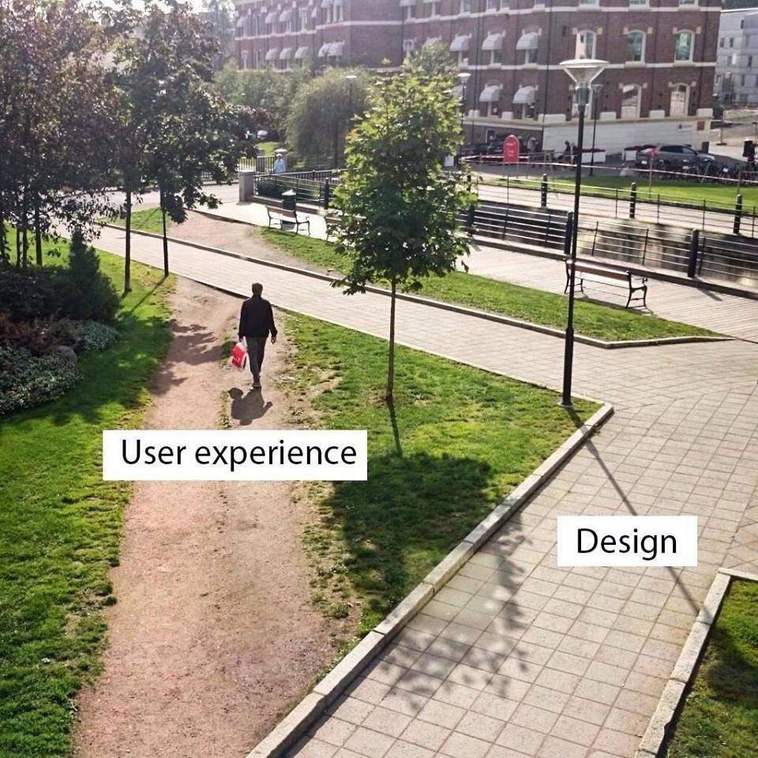
First, let's see how the designer (me) expected users to use it:
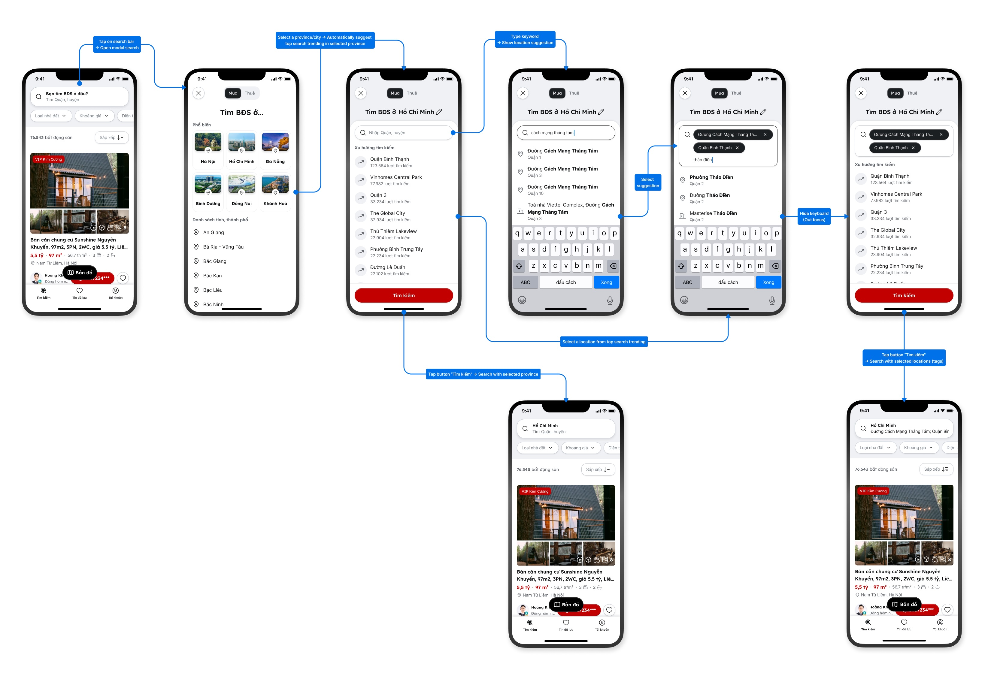
Then, how users actually used it in real life:
-
Users expected that after selecting a province or city, the next step would be selecting a district or ward. But in reality, they had to type the name into the search bar - there was no location list at all.
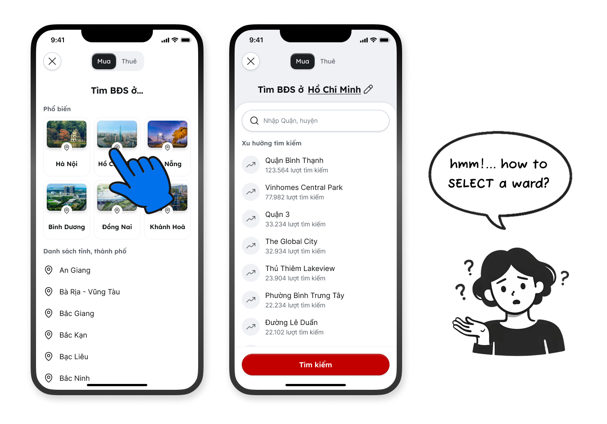
-
Users thought that to search "Cach Mang Thang Tam Street, District 10" they needed to take 2 separate steps:
- Step 1: Add tag "Đường Cách Mạng Tháng Tám"
- Step 2: Add tag "Quận 10"
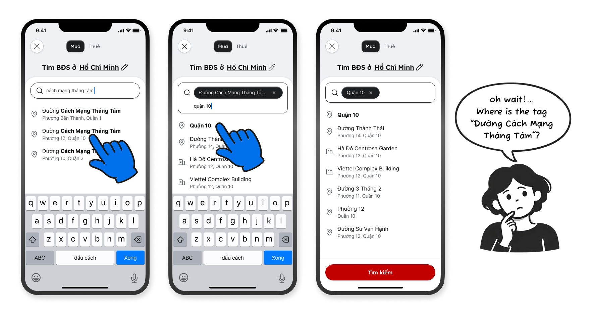
By doing so, the final selected location tag became District 10 - because of a rule called "Search Zoom in / Zoom out," which zooms out from Street to City level.
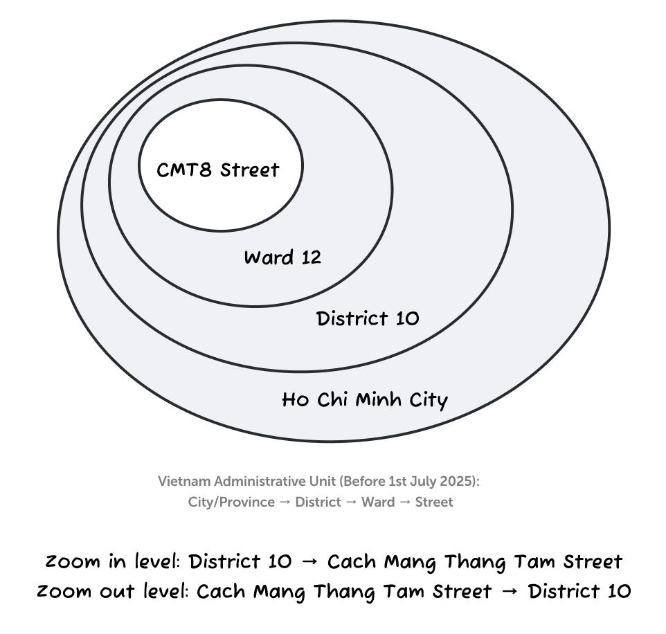
In reality, they just needed to type directly into the search bar and select a single correct tag: "Cách Mạng Tháng Tám, Quận 10."
-
Users struggled with Vietnam's administrative geography. For example, Da Lat city belongs to Lam Dong Province - it's not the same administrative unit as Ho Chi Minh City or Da Nang City. Many users thought it was "just a city" and couldn't find it in the city list.
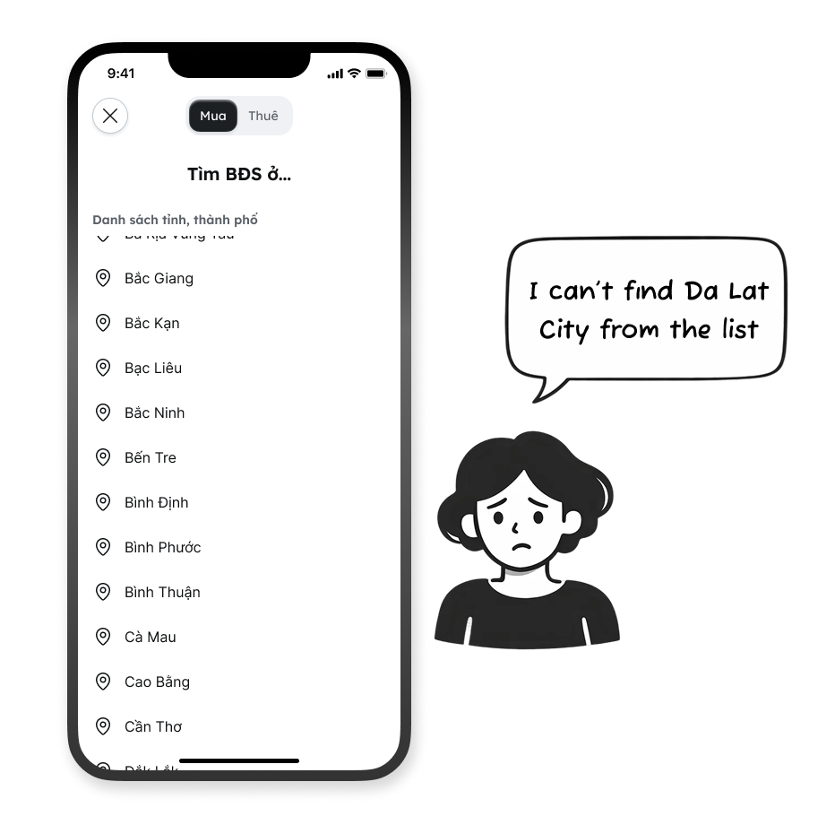
-
Searching a project name was another major pain point. Many projects in Vietnam have English names. For users unfamiliar with English, this was a significant barrier.
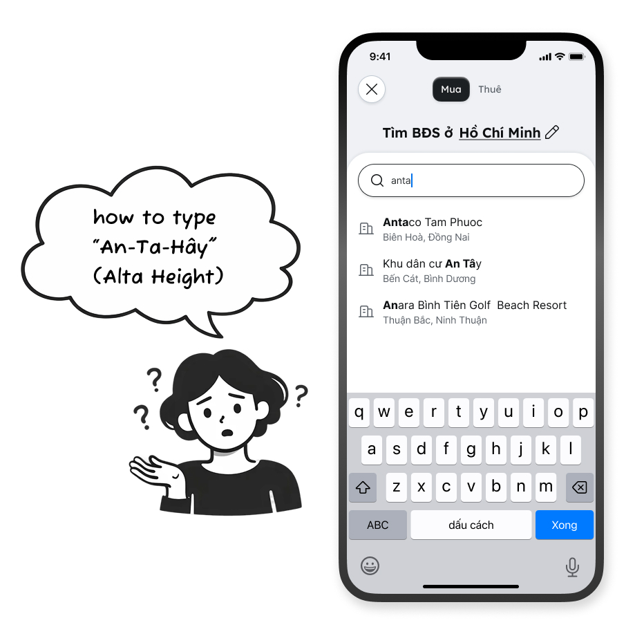
Key insight #2
Most users prefer to type freely - any keywords - into the search bar, just like Google.
We analyzed the top 1,000 search keywords from Google and directly on our platform. Users were inputting queries such as:
- mua chung cư 3 tỷ hồ chí minh
- chung cư mini dưới 10 triệu bình thạnh
This revealed the most common user search pattern (search criteria):
intent + location + category + price
Design solutions
Input your initial keyword - then we do the rest
My team and I decided to solve all user pain points with the search location function, with less focus on multi-location. We redesigned the search bar so users can type any keywords, just like Google - which is familiar to almost all internet users.
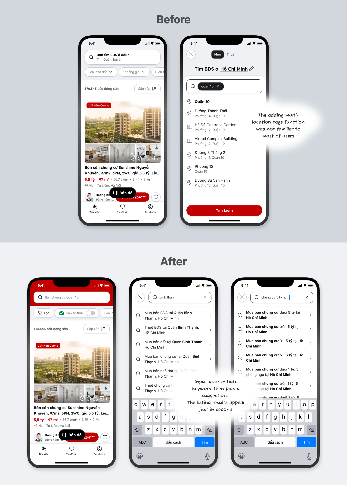
New UX/UI can't work well without a smart search engine behind it. We decided to build a new engine called Auto-complete, crafted by our AI team to replace the old, outdated engine.
The autocomplete system interprets user intent even with partial keywords, typos, or shorthand, and returns high-quality structured suggestions.
High-level principles (autocomplete logic):
| Initial input | Autocomplete suggestion |
|---|---|
| Location | Intent + Location |
| Category | Intent + Category + Location |
| Category + Location | Intent + Category + Location + Price / Bedroom / Bathroom |
| Category + Location + Price | Intent + Category + Location + Price + Bedroom / Bathroom |
Examples:
| Initial input | Autocomplete suggestion |
|---|---|
| hồ chí minh | Mua bán BĐS tại Hồ Chí Minh |
| chung cư mini | Cho thuê căn hộ chung cư mini tại Quận 7 |
| đất nền long thành | Mua bán đất nền tại Long Thành, Đồng Nai, giá trên 3 tỷ |
| chung cư bình thạnh 5 tỷ | Mua bán căn hộ chung cư tại Bình Thạnh, Hồ Chí Minh, giá dưới 5 tỷ |
Select all your criteria in one place
What if you don't want to type? What if you have a long list of criteria you want to browse? What if you want to set everything - including location - at once and view results immediately? The advanced filter solves all of that.
On the advanced filter modal, you can select location, intent, category, price, area, bedroom count, and more - then instantly view matching listings.
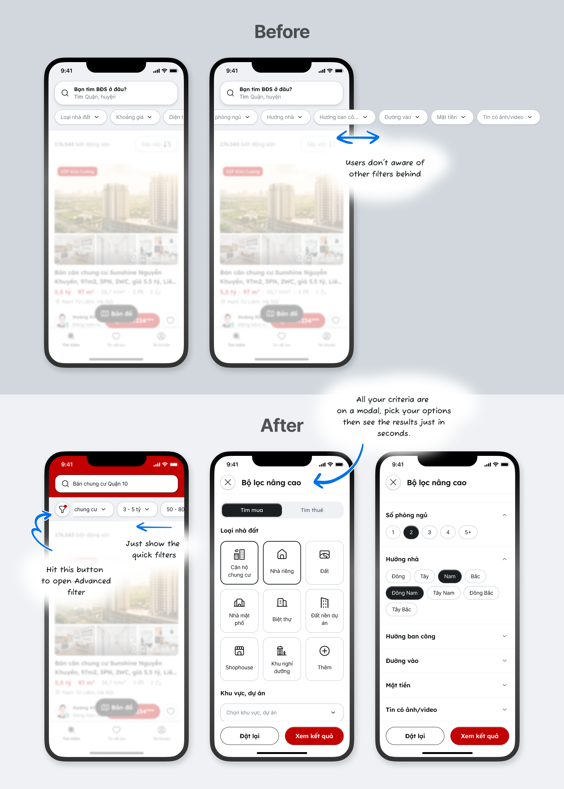
Coming back to Mai's problem from the opening story - the filter by location reduces cognitive load and helps users recall the correct location or project name.
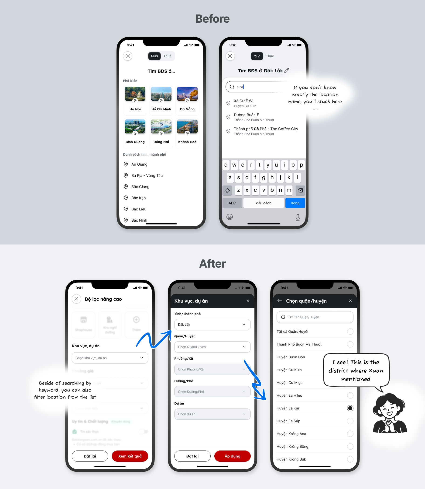
Risk & Trade-off
- Returning users familiar with the old location tag behavior will need time to learn the new search tool. Some users may request multi-location search. However, this phase focuses on simplifying the experience. Multi-location search will be built in the next phase.
- The new experience depends on the new autocomplete search engine. We must run careful testing phases, measure performance, and maintain it consistently.
Run A/B testing
Rolling out randomly to 50% of users to measure the performance of the new search engine and UX/UI compared to the current version:
- Variant A (Treatment) - when a user types a keyword and executes a search, we show results returned by the new engine.
- Variant B (Control) - we keep the old search engine as-is.
After one month, the results were very intuitive and outperformed our expectations:
| Goal | Metric | Result |
|---|---|---|
| Reduce time to search | Time on site | Reduced by 5–6% |
| % of users clicking History search for quick access | 11–16% | |
| Search accuracy | Click / SRPv (avg. search result pages with clicks) | Increased ~46% (mobile) |
| % of users clicking on a suggested query | 40–50% | |
| % of users hitting Enter without clicking a suggestion | 25% |
What the data says:
- The new search tool saved time by combining a smarter engine, simpler UX, and quick access through history search.
- The new engine returned matching suggestions, resulting in a higher click-through rate on listing search results.
- 25% of users hit Enter without clicking a suggestion - meaning the first suggestion already matched their intent. (We automatically search using the first suggestion when users hit Enter.)
Impact
After 3 months, the search & filter feature achieved a 4.3/5★ rating, which has held stable for over 6 months. User complaints decreased significantly by approximately 60%.
Learnings
- Solving issues for a minority of users can negatively impact the majority. Always ensure the main use cases are well-supported and adopted by your primary users.
- Reducing cognitive load by showing a list of locations remains one of the best solutions - and can't be fully replaced by free-text input alone.
- "You don't know what you don't know." Make sure important features are visible and easy to reach.
✽ ✽ ✽ Some information and data in this case study have been modified for privacy
More case studies


Happy to connect & build products together
Phone: 036 744 3501
Email: hapham270891@gmail.com